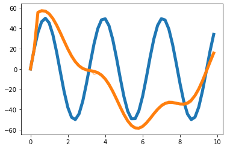

import numpy as np
import matplotlib.pyplot as pltToy Example Note
import pandas as pd
import pickleT = 50
t = np.arange(T)/T * 10 def load_data(fname):
with open(fname, 'rb') as outfile:
data_dict = pickle.load(outfile)
return data_dictdef save_data(data_dict,fname):
with open(fname,'wb') as outfile:
pickle.dump(data_dict,outfile)import torchx = 50*np.sin(2*t)#+30*np.sin(5*t)
eps_x = np.random.normal(size=T)
y = x.copy()
for i in range(2,T):
y[i] = 0.35*x[i-1] - 0.15*x[i-2] + 50*np.cos(0.5*t[i])
eps_y = np.random.normal(size=T)plt.plot(t,x,color='C0',lw=5)
plt.plot(t,x+eps_x,alpha=0.5,color='C0')
plt.plot(t,y,color='C1',lw=5)
plt.plot(t,y+eps_y,alpha=0.5,color='C1')
_node_ids = {'node1':0, 'node2':1}
_node_ids = {'node1':0, 'node2':1}
_FX1 = np.stack([x,y],axis=1).tolist()
_edges1 = torch.tensor([[1,0]]).tolist()
data_dict1 = {'edges':_edges1, 'node_ids':_node_ids, 'FX':_FX1}
#data_dict = itstgcn.load_data('./data/fivenodes.pkl')
save_data(data_dict1, './data/toy_example1.pkl')
data1 = pd.DataFrame({'x':x,'y':y,'xer':x,'yer':y})
save_data(data1, './data/toy_example_true1.csv')
np.stack([x+eps_x,y+eps_y],axis=1).shape(800, 2)_node_ids = {'node1':0, 'node2':1}_FX = np.stack([x+eps_x,y+eps_y],axis=1).tolist()_edges = torch.tensor([[0,0],[0,1],[1,0],[1,1]]).tolist()data_dict = {'edges':_edges, 'node_ids':_node_ids, 'FX':_FX}data_dict['edges'][[0, 0], [0, 1], [1, 0], [1, 1]]np.array(data_dict['edges']).shape(4, 2)save_data(data_dict, './data/toy_example.pkl')data_dict = load_data('./data/toy_example.pkl')data_dict.keys()dict_keys(['edges', 'node_ids', 'FX'])data_dict['edges'][[0, 0], [0, 1], [1, 0], [1, 1]]data_dict['node_ids']{'node1': 0, 'node2': 1}np.array(data_dict['FX']).shape(800, 2)data = pd.DataFrame({'x':x,'y':y,'xer':x+eps_x,'yer':y+eps_y})save_data(data, './data/toy_example_true.csv')data = load_data('./data/toy_example_true.csv')_node_ids = {'node1':0, 'node2':1}_FX1 = np.stack([x,y],axis=1).tolist()_edges1 = torch.tensor([[1,0]]).tolist()data_dict1 = {'edges':_edges1, 'node_ids':_node_ids, 'FX':_FX1}
#data_dict = itstgcn.load_data('./data/fivenodes.pkl')save_data(data_dict1, './data/toy_example1.pkl')data1 = pd.DataFrame({'x':x,'y':y,'xer':x,'yer':y})save_data(data1, './data/toy_example_true1.csv')